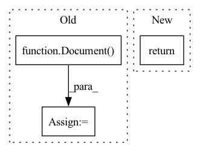

Pattern ID :22890

Before Change
def new_doc_hash(doc: "Document") -> int:
d = doc
if doc_field_mask:
d = Document()
doc_field_mask.MergeMessage(doc, d)
return hash(d.SerializeToString())
After Change
def new_doc_hash(doc: "Document") -> int:
return id2hash(new_doc_id(doc))
def new_doc_id(doc: "Document") -> str:
In pattern: SUPERPATTERN
Frequency: 3
Non-data size: 3
Instances
Fragment ID: 72782036
Project Name: jina-ai/jina
Commit Name: 8bdd7774dd43cd42175381e44ba0de327f8c413f
Time: 2020-10-01
Author: han.xiao@jina.ai
File Name: jina/proto/__init__.py
M Class Name: AnonimousClass
N Class Name: AnonimousClass
M Method Name: new_doc_hash(1)
N Method Name: new_doc_hash(1)
M Parent Class:
N Parent Class:
M File Name: jina/proto/__init__.py
N File Name: jina/proto/__init__.py
M Start Line: 26
M End Line: 30
N Start Line: 27
N End Line: 27
'>
Before Change
def run_test(flow, endpoint, port_expose):
with flow:
resp = flow.post(
endpoint,
[Document() for _ in range(10)],
return_results=True,
port_expose=port_expose,
)
After Change
):
responses.append(resp)
return responses
@pytest.fixture()
'>
Fragment ID: 72782035
Project Name: jina-ai/jina
Commit Name: 6e9e7ef32f61cab04c6efc7a9f21659d26b50fdb
Time: 2022-01-10
Author: joan.martinez@jina.ai
File Name: tests/k8s/test_k8s.py
M Class Name: AnonimousClass
N Class Name: AnonimousClass
M Method Name: run_test(4)
N Method Name: run_test(3)
M Parent Class:
N Parent Class:
M File Name: tests/k8s/test_k8s.py
N File Name: tests/k8s/test_k8s.py
M Start Line: 10
M End Line: 18
N Start Line: 78
N End Line: 110
'>
Before Change
by_doc_id = sort_then_group(tasks, key_func=lambda x: x["data"]["id"].split("_")[0])
docs = []
for doc_id, tasks_iter in by_doc_id:
doc = Document(idx=doc_id)
by_section = sort_then_group(
tasks_iter, key_func=lambda x: tuple(x["data"]["id"].split("_")[1:])
)
for (section_name, section_part_id), section_tasks_iter in by_section:
After Change
def get_docs(self):
tasks = self.get_all_tasks()
return self.ls_json_to_doc(tasks)
@staticmethod
def _resolve_contigs(
'>
Fragment ID: 72782033
Project Name: astrazeneca/kazu
Commit Name: a0400edd69546deb6f0e2899a30b4e854a9a8d0d
Time: 2022-11-30
Author: richard.jackson4@astrazeneca.com
File Name: kazu/modelling/annotation/label_studio.py
M Class Name: LabelStudioJsonToKazuDocumentEncoder
N Class Name: LabelStudioJsonToKazuDocumentEncoder
M Method Name: get_docs(1)
N Method Name: get_docs(1)
M Parent Class:
N Parent Class:
M File Name: kazu/modelling/annotation/label_studio.py
N File Name: kazu/modelling/annotation/label_studio.py
M Start Line: 168
M End Line: 201
N Start Line: 222
N End Line: 223